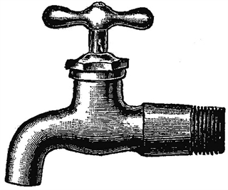
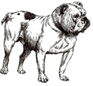

LACHER PRISE
"Paix et liberté ne peuvent être séparées, car personne ne peut être en paix tant qu'il n'est pas libre." MALCOM X

Bien souvent, à vouloir contrôler tout ce qui nous entoure, nous gaspillons notre énergie et perdons notre sérénité. Nous nous cramponnons à des prises sinon métaphoriques, subjectives et imaginaires. Nous nous entêtons et en devenant obtus, nous nous rigidifions dans une attitude mal adaptée et énergivore. Alors, qu’avons-nous au juste, à " lâcher " ?
Cela ne signifie en rien laxisme ou abandon mais lâcher peut vouloir dire qu'on accepte de regarder une situation d'un autre point de vue en renonçant à tout contrôler, pour soi-même et pour les autres . C'est se recentrer sur soi afin de gérer ses émotions, ses peurs, ses pensées et son corps permettant ainsi de trouver une autre dynamique.
Peut-être est-il utile de s'interroger sur la prise en question, car avant de prétendre "lâcher", encore faut-il savoir ce que nous "tenons". Ne faut-il pas mieux se saisir que de lâcher afin de trouver une météo intérieure clémente ? Possiblement, en acceptant d’apporter certains changements dans notre manière de voir le monde et de nous percevoir.
Cela ne signifie en rien laxisme ou abandon mais lâcher peut vouloir dire qu'on accepte de regarder une situation d'un autre point de vue en renonçant à tout contrôler, pour soi-même et pour les autres . C'est se recentrer sur soi afin de gérer ses émotions, ses peurs, ses pensées et son corps permettant ainsi de trouver une autre dynamique.
Peut-être est-il utile de s'interroger sur la prise en question, car avant de prétendre "lâcher", encore faut-il savoir ce que nous "tenons". Ne faut-il pas mieux se saisir que de lâcher afin de trouver une météo intérieure clémente ? Possiblement, en acceptant d’apporter certains changements dans notre manière de voir le monde et de nous percevoir.
En pratique cela consiste à s’exercer à demeurer un ici et maintenant avec ce qui est. Cette pratique n’exclut en rien l’aptitude à prévoir, à organiser ni ne nous dispense de nos responsabilités. Et l’attitude d’ouverture inconditionnelle sur l’instant ne conduit nullement à baisser les bras, à tolérer l’intolérable. Ainsi, le lâcher prise dans l’immédiateté est totalement compatible avec l’action dans la durée.
C'est en aucune mesure une résignation, bien au contraire, c'est un moyen de pouvoir prendre conscience de ses limites, ses valeurs , ses conflits et surtout ses besoins actuels. Donc lâcher, c'est se saisir de ses qualités d'adaptatation, c'est modifier son regard sur le monde et ainsi s’ouvrir à l’imprévu sans avoir la sensation devoir se battre sans cesse.
C'est en aucune mesure une résignation, bien au contraire, c'est un moyen de pouvoir prendre conscience de ses limites, ses valeurs , ses conflits et surtout ses besoins actuels. Donc lâcher, c'est se saisir de ses qualités d'adaptatation, c'est modifier son regard sur le monde et ainsi s’ouvrir à l’imprévu sans avoir la sensation devoir se battre sans cesse.
EN RELATION


SOMMEIL
STRESS
HUMEUR
COMMUNIQUER
ANXIETE